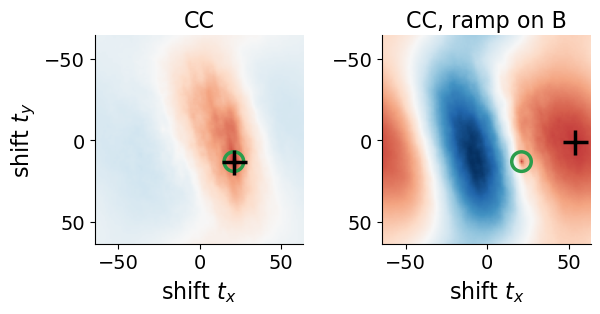
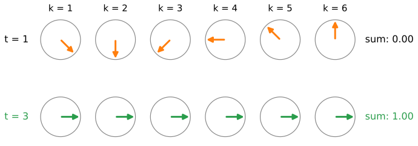
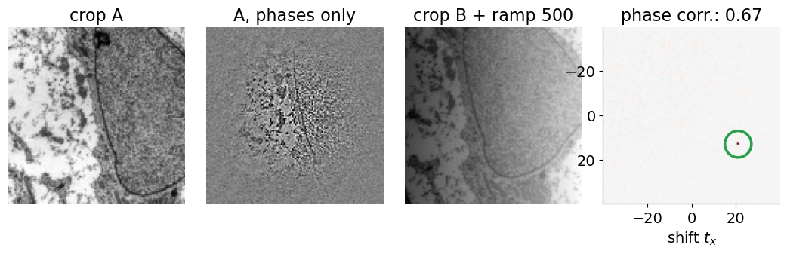
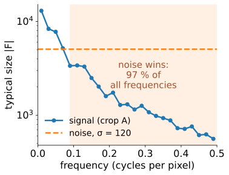
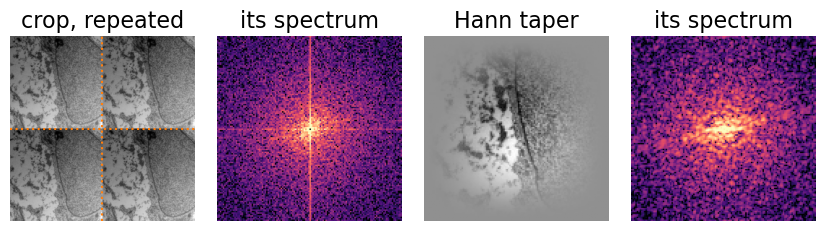
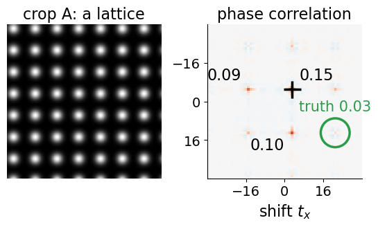

Last unit: the cross-correlation of two images for every shift, as the inverse FFT of A_k\overline{B_k}. Its peak is broad, and uneven brightness can move it. Today: throw away the size of each wave and keep only its phase.
Why that gives a sharp spike at the shift (Kuglin & Hines, 1975).
What it buys: brightness does not matter, the spike is easy to find.
What it costs: noise gets the same vote as signal; low-pass weighting, partial normalisation.
The border of the image: a taper against the false peak at zero.
How much to trust a peak: peak height and peak ratio.
Recall: a complex number z = |z|e^{i\varphi} has a size |z| and a phase \varphi; z/|z| keeps the phase only.
Slides titled The math give the formulas and proofs; the ideas are complete without them.
The trouble with plain cross-correlation
Images are dominated by slow waves: smooth brightness changes carry most of the strength. Their votes are the biggest, and a slow wave agrees with many nearby shifts: the peak is broad.
A broad peak is hard to locate precisely and easily pushed sideways.
Uneven brightness (an illumination ramp, a bright region) changes the slow waves most, exactly the ones with the biggest votes. The peak can move to a wrong place.
In the demo: two 128 \times 128 crops of the micrograph, shifted by (21, 13). CC finds the shift, but the neighbouring shift (20, 10) still scores 70 % of the peak. Add a brightness ramp of 500 grey levels across B: CC’s peak jumps to (54, 1).

Keep only the phase
The shift theorem (the Fourier unit, exercise B4): a shift changes the phases of the waves, not their sizes. So the shift is in the phase differences alone.
Divide each A_k\overline{B_k} by its own size: every wave keeps its phase difference and gets a vote of exactly 1.
At the true shift all votes agree, and nothing else is left: the inverse FFT is a single spike, height 1 for a pure (circular) shift, zero everywhere else.
Picture: arrows on unit circles, all of the same length, each turning at its own rate as the shift changes. Only at the true shift do they all point the same way.

The math: why a delta
If B is A shifted circularly, g(x) = f(x + t_0), then (the shift theorem, the Fourier unit B9) G_k = e^{2\pi i\,k\cdot t_0/N}F_k \quad\Longrightarrow\quad R_k = \frac{F_k\overline{G_k}}{|F_k\overline{G_k}|} = e^{-2\pi i\,k\cdot t_0/N} for every k with F_k \ne 0. The inverse DFT of a pure phase ramp is a delta: r(t) = \frac1N\sum_k e^{2\pi i\,k\cdot(t - t_0)/N} = \delta(t - t_0) = \begin{cases} 1 & t = t_0 \\ 0 & \text{otherwise.}\end{cases} In 2D, k\cdot t means k_xt_x/N_x + k_yt_y/N_y (times N). In practice R_k = F_k\overline{G_k}/(|F_k\overline{G_k}| + \varepsilon), computed in floating point (the bit-depth day): the magnitudes can be tiny.
Try it: phase correlation
What it buys
Brightness and contrast. A gain multiplies every B_k by the same number; an offset changes only the constant wave (k = 0). Neither changes any phase: the surface is identical.
Uneven illumination mostly changes the slow waves, which now get no more vote than any other.
A sharp spike: easy to locate, and two different shifts in one picture (two moving objects) give two separate spikes.
In words: phase correlation compares edges and texture; CC compares blobs of brightness. Normalising the spectrum is “whitening” the images: an edge-enhancing filter.

By hand: normalising the example
The last unit’s example: A = (0, 1, 2, 0), B = (1, 2, 0, 0), A_k\overline{B_k} = (9, -5i, -1, 5i).
Divide by the sizes (9, 5, 1, 5): R = (1, -i, -1, i).
Now take B' = 2B + 1 = (3, 5, 1, 1): B'_k = (10, 2 - 4i, -2, 2 + 4i). Only B'_0 changed beyond a factor 2, and k = 0 is normalised to 1 anyway: R is unchanged.
Partial overlap and the peak height
Real tiles are not circular shifts: part of each crop has no partner.
The spike is still at the shift, but its height is roughly the fraction of shared content. Crops of 128^2 shifted by (21, 13) share \frac{107 \cdot 115}{128^2} = 75\,\%: the peak is 0.62 (0.67 with a taper, which favours the centre).
The rest of the surface is a low, noisy floor (here about 0.03).
Smaller crops, 64^2, share only 54 % with the same shift: the peak drops to 0.32, the ratio to the next peak from 23 to 5.
What it costs: noise
Normalising gives every frequency the same vote, including the ones that are mostly noise.
Fine detail (high frequencies) is weak in most images; there, the noise (the camera-noise unit’s \sigma_n) is as strong as the signal, and the phase difference is random.
There are many more high frequencies than low ones: their random votes add up to a noisy floor that can drown the spike.
Remedies:
low-pass weighting: normalise, then multiply by a smooth weight that fades out the highest frequencies;
partial normalisation: divide by |A_k\overline{B_k}|^p with 0 < p < 1 (p = 0: CC, p = 1: phase correlation);
a small \varepsilon in the denominator, so that nearly empty frequencies do not get a full vote.

Try it: noise and low-pass
Tapering: the border problem
The DFT assumes each crop repeats (the Fourier unit): the right border meets the left one, usually with a jump in brightness.
These jump lines belong to the frame, not to the sample: they are at the same place in A and in B and do not move with the shift.
They add strong vertical and horizontal waves (a bright cross in the spectrum) that vote for shift zero, and for shifts along the axes.
Cure: multiply both crops by a Hann taper, a smooth bump that is 1 in the middle and 0 at the border, after subtracting the mean. No jump, no cross.
Price: the content near the border counts less, so overlaps at the edge of a tile are weighted down (the stitching unit therefore does not taper).

Try it: no taper
The math: tapers and noise
Hann taper of length N: w(n) = \tfrac12\big(1 - \cos\frac{2\pi n}{N - 1}\big), n = 0, \ldots, N-1; in 2D the product w(x)\,w(y). Multiplying by w convolves the spectrum with \hat w, a narrow bump: leakage is local instead of a 1/k tail along the axes.
Noise. With g(x) = f(x + t_0) + \eta(x): G_k = e^{2\pi i k t_0/N}F_k + H_k, \qquad \arg G_k = \frac{2\pi k t_0}{N} + \arg F_k + \delta_k, \quad |\delta_k| \lesssim \frac{|H_k|}{|F_k|}. The phase error \delta_k is small where the signal is strong and random where |F_k| \lesssim |H_k|, typically at high |k|. Phase correlation gives those frequencies full weight; a low-pass weight W_k (e.g. Gaussian in |k|) or |F_k\overline{G_k}|^{-p} with p < 1 reduces their share of the sum \sum_k W_k R_k e^{2\pi i k t/N}.
How much to trust a peak
Peak height: about the shared fraction of the content (for phase correlation). A low peak means little overlap, or noise, or no match.
Peak ratio: highest peak divided by the second highest. A ratio near 1 means two shifts are about equally good: do not trust this pair.
Typical low-ratio cases: a blank tile (nothing to match), periodic texture (every period gives a peak), strong noise.
A mosaic program uses this confidence to decide which pairwise shifts to believe (the stitching unit).
In the demo, a lattice of blobs 18 pixels apart shifted by (21, 13): the highest peak is at (3, -5), one lattice period away in each direction; the true shift scores only 0.03.

Summary
Phase correlation: normalise A_k\overline{B_k} to size 1, inverse FFT. A pure shift gives a spike of height 1 at the shift.
Gains and offsets do not change it; uneven illumination hardly does. It compares edges and texture.
Noise gets a full vote too: weight down the high frequencies (low-pass) or normalise only partly (0 < p < 1).
The image border repeats with a jump: a Hann taper removes the cross in the spectrum and the false peak at zero.
Trust a peak by its height (shared fraction) and its ratio to the next one; periodic and empty images give ambiguous peaks.